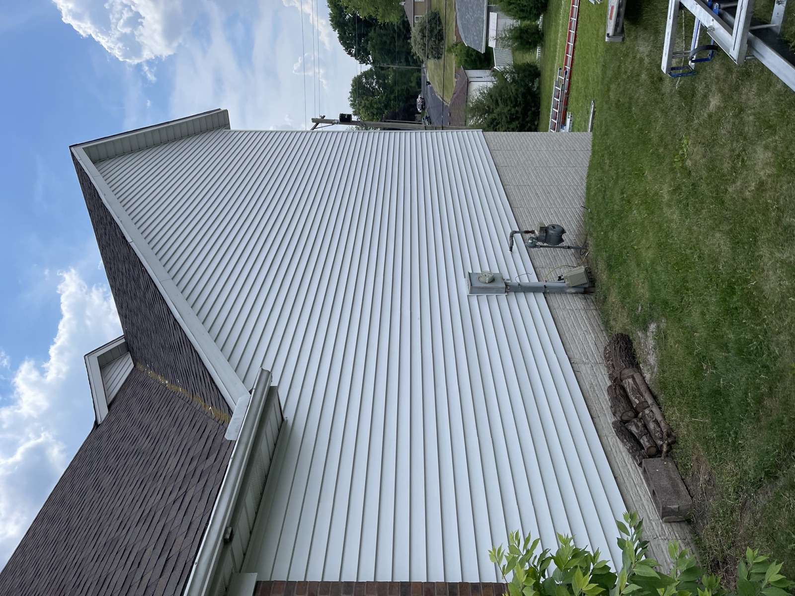

What a Full Roof Replacement Costs, Takes, and Looks Like in Central Iowa
A full residential roof replacement in Central Iowa runs $8,000 to $15,000 for a standard asphalt shingle install on an average-sized home in the Des Moines metro. Steeper pitches, larger square footage, complex rooflines, or premium materials like standing seam metal push that number higher. Most jobs finish in 1 to 3 days depending on size and weather. The process is straightforward: tear off the old layers, inspect and repair the deck, install new synthetic underlayment and starter strip, and lay premium architectural shingles or metal panels rated for Iowa hail and wind. You get a written quote up front, a manufacturer warranty on the materials, and a workmanship warranty from Black Ridge on top of that. Most homeowners stay in the house during the work, and we protect landscaping, siding, and windows every day.
Roofing Materials Built for Iowa Weather
Every material has a fit. Match it to your home, budget, and how long you plan to stay.

Architectural Asphalt Shingles
The most common Central Iowa roof, and for good reason. 25 to 50-year manufacturer warranties, hundreds of color options, and a proven track record against Iowa hail and wind. Best cost-to-lifespan ratio for most homes.

Standing Seam Metal
40 to 70-year lifespan. Handles Iowa hail and snow like nothing else. Higher upfront cost, but the last roof most homeowners will ever buy. Energy efficient and low maintenance.

EPDM Rubber (Flat Roofs)
For flat and low-slope roofs like garages, additions, and commercial buildings. Waterproof, UV-resistant, and built to handle the temperature swings Central Iowa throws at it.

How a Roof Replacement Actually Runs
- 1. Free inspection and estimate: We walk the roof, take photos, measure, and give you a firm written quote with materials, labor, timeline, and payment breakdown.
- 2. Material and color selection: You pick shingles, metal panel color, or EPDM. We bring samples and help you decide based on the home style and neighborhood.
- 3. Scheduling and prep: We schedule around Iowa weather and give you a firm start date. Landscaping, siding, and windows get protected before day one.
- 4. Tear-off and deck inspection: Old shingles and underlayment come off. We inspect the deck for rot, soft spots, or damage, and replace anything that needs it.
- 5. Underlayment and install: New synthetic underlayment, starter strip, drip edge, and shingles or panels go on to manufacturer specifications. Every fastener where it should be.
- 6. Cleanup and final walkthrough: Job site cleaned every day, magnets across the yard, final walkthrough with you so you see the finished work up close.
When Replacement Beats Repair
20+ Year Old Roof
Most asphalt roofs in Central Iowa are near or past end-of-life at 20 years. Repairs keep costing more and lasting less. A full replacement resets the clock.
Widespread Granule Loss
Bare fiberglass mat showing across large sections means the shingles have lost their UV protection. Replacement is the only real fix.
Multiple Leak Locations
One leak is a repair. Three leaks across different parts of the roof usually means the system has failed and patching one just moves the water problem to the next weak spot.
Storm Damage Across the Roof
When hail or wind hit the whole roof, spot repairs will not restore the manufacturer warranty and often trigger insurance replacement anyway.
Sagging or Soft Spots
Structural sagging or a soft-feeling deck under your feet means the wood is compromised. Repair without replacement is a temporary fix at best.
Selling Within a Few Years
An aging roof gets flagged in every home inspection. Replacing it before you list often pays for itself in avoided negotiation and faster close.
The Details Most Roofers Skip
A roof replacement done cheap will look fine on day one and start failing at year five. The difference is in the details you cannot see once the shingles are down:
- Deck inspection: Every soft or rotted decking board gets replaced before new material goes on. Cheap installers reshingle over compromised decking.
- Synthetic underlayment: We use synthetic underlayment, not old-style felt paper. It handles Iowa temperature swings better and does not tear during install.
- Ice and water shield at eaves and valleys: Prevents ice dam damage in Iowa winters. Some installers skip this to save cost.
- Starter strip along all eaves and rakes: Not scrap shingles cut down. Actual manufacturer starter strip locked to the drip edge.
- Proper nailing pattern: The right number of nails, in the right spot, per manufacturer spec. Missing a nail or nailing too high is the top warranty-voiding mistake.
- Ridge and hip caps: Full-thickness cap shingles, not cut-down field shingles.
- Flashing replaced or resealed: Old flashing rarely lasts as long as the new roof. We replace or fully reseal step, valley, chimney, and vent flashing on every job.
The photos on this page are our jobs. Everything you see was installed by our crew, from tear-off to final walkthrough.

Roof Replacement FAQs
Most residential roof replacements in the Des Moines metro run between $8,000 and $15,000 for a standard asphalt shingle install on an average-sized home. Steeper pitches, larger square footage, complex rooflines, or upgraded materials like standing seam metal push the number higher. You get a firm written quote before any work starts.
Most residential roof replacements in Central Iowa take 1 to 3 days depending on the size of the roof, weather, and material choice. Simple tear-off and reshingle jobs on average-sized homes are often completed in a single day. Metal roofing usually takes longer than asphalt.
A full replacement usually makes more sense than repair when the roof is 20+ years old, has multiple leak locations, shows widespread granule loss, or took storm damage across most of the roof surface. It also makes sense when you plan to sell within a few years.
We install architectural asphalt shingles (the most common Central Iowa choice, 25 to 50-year warranties), standing seam metal roofing (40 to 70-year lifespan, excellent for hail and snow), and EPDM rubber for flat or low-slope roofs like garages and additions.
You get two warranties on a new roof from us. The manufacturer covers the materials, usually 25 to 50 years for asphalt and 40 to 70 years for metal. Black Ridge covers the workmanship on top of that.
Yes, we offer flexible financing options so you do not have to pay the full amount upfront. We can discuss payment plans during your free estimate. If the replacement is storm-driven, we also coordinate with your homeowners insurance directly.
Related Roofing Info
All Roofing Services
The full picture on our roofing work across Central Iowa.
Storm Damage
Hail, wind, and emergency repairs with full insurance claim help.
Roof Repair
Leaks, missing shingles, flashing, and small storm damage repairs.